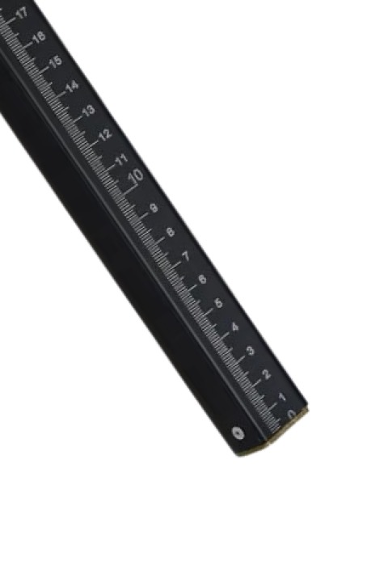

Метрошток МШи - 3,5 черный, 2 звена
АЗТ Комплект
Раздел: Метроштоки, рулетки · АЗС
Цена и наличие — по запросу. Поставляем оригинал и аналоги. Доставка по России.
Модификации и размеры (19)
- Метрошток МШи - 3,5 черный, 2 звена
- Метрошток МШи - 2,5 черный, 2 звена
- Метрошток МШС - 3,5 метра с поверкой, 2 звена
- Метрошток МШТм-3,5м Круглый
- Метрошток МШи -4,5 3 звена черный, круглый
- Метрошток МШС - 4,0 метра с поверкой, 2 звена
- Метрошток МШТм-4,4м Круглый, 3 звена
- Метрошток МШС - 3,5 Т-образный, 2 звена
- Метрошток МШТм-3,5м черный
- Метрошток МШи -4,5 черный, круглый
- Метрошток МШС - 3,5 черный, 2 звена
- Метрошток МШС - 3,5 м, круглый, 3 звена
- Метрошток МШС - 3,5 метра, чёрный, 3 звена
- Метрошток МШТм-3,5м Т-образный
- Метрошток МШТм-4,4м черный, 3 звена
- Метрошток МШС - 5,0 метра с поверкой, 3 звена
- Метрошток МШТм-2 м Т-образный, 2 звена
- Метрошток МШС - 3,0 метра с поверкой, 2 звена
- Метрошток МШТм-2 м Круглый, 2 звена
Подберём нужный вариант — уточните при запросе.
Описание
Метрошток МШи - 3,5 черный, 2 звена производства АЗТ Комплект — позиция из раздела «Метроштоки, рулетки» для АЗС. Компания SYNDICAT поставляет оборудование и комплектующие для автозаправочных и газозаправочных станций по всей России. Цена и наличие «Метрошток МШи - 3,5 черный, 2 звена» — по запросу: оставьте заявку или позвоните, подберём оригинал или аналог и рассчитаем доставку.